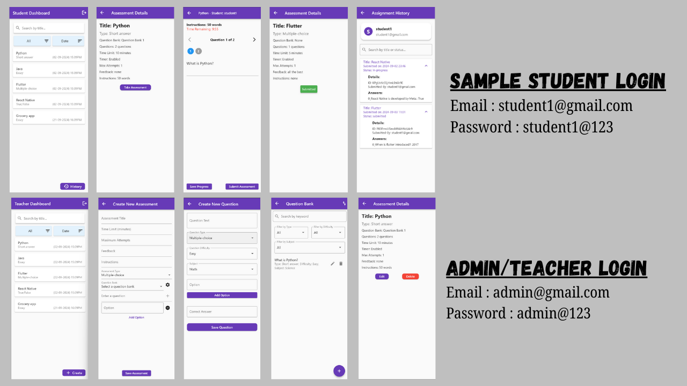

The Student Assessment Management System is designed to streamline the process of creating, administering, and evaluating academic assessments. With a sleek and intuitive user interface, the app allows students to access and complete assignments, while enabling teachers to create assessments, manage question banks, and track student progress. Its functionality ensures ease of use and efficiency for educational institutions, particularly those needing a comprehensive platform to manage various aspects of student evaluation.
Key Features:
- User Authentication: Separate secure login systems for students and teachers/administrators.
- Student Dashboard: Access to ongoing and completed assessments, with the ability to view assignment history.
- Teacher Dashboard: Tools for creating new assessments, managing question banks, and viewing student submissions.
- Assessment Creation: Customizable options for assessment title, type, duration, and number of questions.
- Multiple Question Types: Support for various formats including short answer and multiple-choice questions.
- Question Bank: A repository for storing and organizing assessment questions for reuse.
- Assessment Details: Clear presentation of assessment information including title, type, duration, and question count.
- Submission System: Allows students to submit completed assessments directly through the app.
- Responsive Design: Optimized for various devices, ensuring a consistent user experience across platforms.
Technologies Used:
- Flutter: Cross-platform mobile development framework, evident from the assessment titles in the image.
- Firebase: Backend integration for authentication and management system data storage.
- UI Design: Custom-designed interface with a purple color scheme for a modern, clean look.
- Authentication System: Implemented for secure access to student and teacher/admin accounts.
- Version Control: Likely uses a system like Git for collaborative development (inferred based on standard practices).